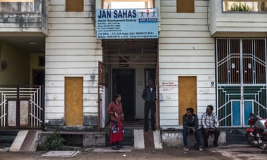
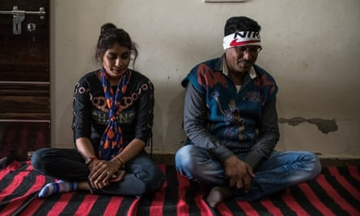

Many families in India still mourn the birth of a girl. But when Leena was born, people celebrated.
Sagar Gram, her village in central India, is unique that way. Girls outnumber boys. When a woman marries, it is the groom’s family that pays the dowry. Women are Sagar Gram’s breadwinners. When they are deemed old enough, perhaps at the age of 11, most are expected to start doing sex work.
India officially abolished caste discrimination almost 70 years ago. But millennia of tradition is not easily erased. For most Indians, caste still has a defining influence on who they marry and what they eat. It also traps millions in abusive work. The exploited and trafficked children of Sagar Gram, and dozens of other villages across India’s hinterland, are one of its most disturbing manifestations.
“It is caste and gender slavery,” says Ashif Shaikh of Jan Sahas, an advocacy group that works with members of India’s lowest castes, communities that used to be called “untouchables”.
“We estimate there are 100,000 women and girls in this situation. But there are likely more we haven’t identified. It’s an invisible issue.”
Girls in Sagar Gram grow up hearing a story. Sometime in the misty past of Hindu myth, a king fell in love with a dancer. His enraged queen issued the woman with a challenge: if she could walk a tightrope across a river, she could join the royal family, and permanently raise the status of her caste.
As the woman neared the opposite bank of the river, a step from success, the queen suddenly cut the rope. “Up until now, we lured your men through dancing,” the woman told the queen. “From now on, we will take your men from you with our bodies.”
Workers outside the office of advocacy group Jan Sahas in Dewas.Photograph: Rebecca Conway
Leena, 22, remembers learning about the woman. She remembers the awe she felt when the older girls from her caste, the Bacchara, suddenly had enough money for makeup and nice clothing. She remembers what the adults in her village told her when she was 15, and her family was having money problems.
“Your parents are going through such a hard time,” they told her. “How can you go to school? You need to be working.”
That was when she started. “The rest of the girls in my village were doing it, so I felt like I had to do it as well,” she says. “It was my responsibility.”
Girls in Sagar Gram, which lies next to a highway, are groomed for this life virtually from birth. Parents decide which of their daughters will fetch the best price. Older girls teach them how to attract customers from passing trucks and cars. The younger ones sometimes stow under beds, observing the others at work.
Sex was nonetheless a mystery to Leena. “When I was young, the most important thing was seeing the money the customer was offering,” she says. “I didn’t understand what they were doing to me. I only saw that money was coming in.”
Her virginity was prized. She made 5,000 rupees (£55) on the first night. Her price declined after that. Another Bacchara woman, aged 29, says the most she can make for an encounter is 200 rupees. She might see five or six men in a day.
India’s preference for male children has created a deep gender imbalance. Among the Baccharas of Sagar Gram village, however, the problem cuts the other way: there are 3,595 women in the district compared with 2,770 men, according to the most recent census.
Yet, visiting the village at dusk, few women or girls can be seen. “They’ve all gone to hotels or to stop cars,” an older man says, gesturing at the nearby highway. Every few hundred metres along the road, girls are reclined on rope beds, waving at any vehicle that slows.
The legal age of consent in India is 18. Madhya Pradesh, the state in which Sagar Gram is situated, recently passed the death penalty for anyone who rapes a child under 12, also increasing jail terms for adults who have sex with someone under 18. Police say seven people were arrested for child sexual exploitation offences in Sagar Gram in the past year, five of them women who sold their underage daughters. The law is clear, but does little to sway social custom and economic distress.
“It’s a traditional business,” says deputy superintendent Nagendra Singh Sikarwar, at the nearby Jeeran police station. “Even girls we try to rehabilitate come back to it. The main issue is we don’t have alternative jobs for them. And so their families are keen that they continue the work.”
Most Bacchara men do not work. Only the lowest paid or most degrading jobs are available to them anyway. So they rely on their children. They wait on their porches with the rest of the family while their daughters are inside with customers.
One villager, Balram Chauhan, should be a rich man. He has five daughters. But he is struggling: Chauhan, 52, is the only father in the village who refuses to force his children into sex work.
Balram Chauhan, a member of the Bacchara community, right, has protected his five daughters from sex work.Photograph: Rebecca Conway
“To be exposed to such violence and mental and physical abuse,” he mutters. “How could any parent willingly send them off?”
His mother was a prostitute. Despite his efforts, so were four of his sisters. “From the moment I understood what they were doing I tried to stop them,” he says. “But my parents were against me. They said it was a culture that had been going on for years. Who was I to stop it?”
Trying to break this cycle has been a lifelong struggle. His parents sabotaged his efforts to train as a health worker, Chauhan says. When he married off his two daughters to spare them from a life of prostitution, his family cut him off.
He cannot move his family outside of a Bacchara village: nobody would rent property to someone from his caste. The “higher” caste communities nearby consider his very presence polluting. So he has opened a small shop in Sagar Gram selling biscuits and confectionery, trying to eke out enough to pay for his daughters’ education.
“A lot of people here bad-mouth my daughters,” he says. “If they see them speaking on a cellphone, 10 people come to my shop and tell me: ‘Your daughter is chatting to so-and-so.’ They try to say they have loose characters.
“If I had one daughter, I could handle it. But when there are five …” he trails off. “It’s a difficult thing.”
Additional reporting by Kakoli Bhattarcharya